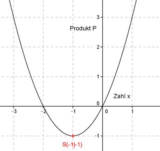

Aufgabe 107 Für welche Zahlen, von denen eine um 2 größer ist als die andere, ist ihr Produkt am kleinsten? Die eine Zahl sei x, dann ist die andere x + 2. P(x) sei das Produkt der beiden Zahlen, abhängig von x P(x) = x(x + 2) P(x) = x2 + 2x Dies ist die Funktionsgleichung einer nach oben geöffneten Normalparabel, deren tiefster Punkt der Scheitelpunkt ist. Quadratische Ergänzung: P(x) = x2 + 2x + 1 - 1 mit x2 + 2x + 1 = (x + 1)2 P(x) = (x + 1)2 - 1 Scheitelpunkt abgelesen: S(-1|-1) Die Scheitelpunktkoordinaten bedeuten: Die kleinere Zahl ist x = -1. und das kleinste Produkt P(-1) = - 1 (-1 + 2) = - 1 Die größere Zahl ist (x + 2) = (-1 + 2) = 1. 